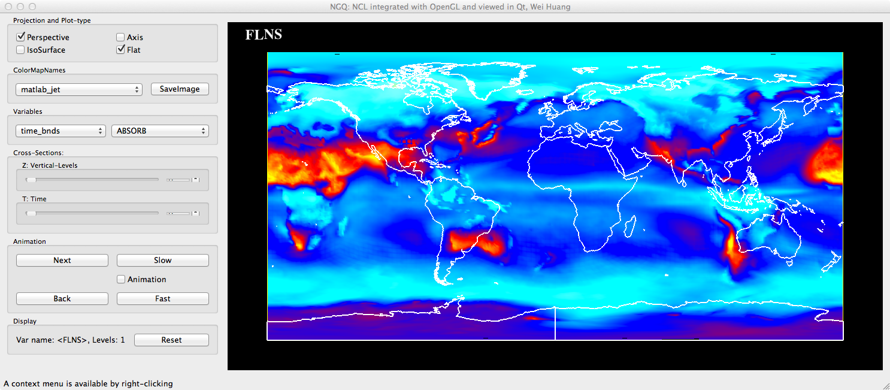
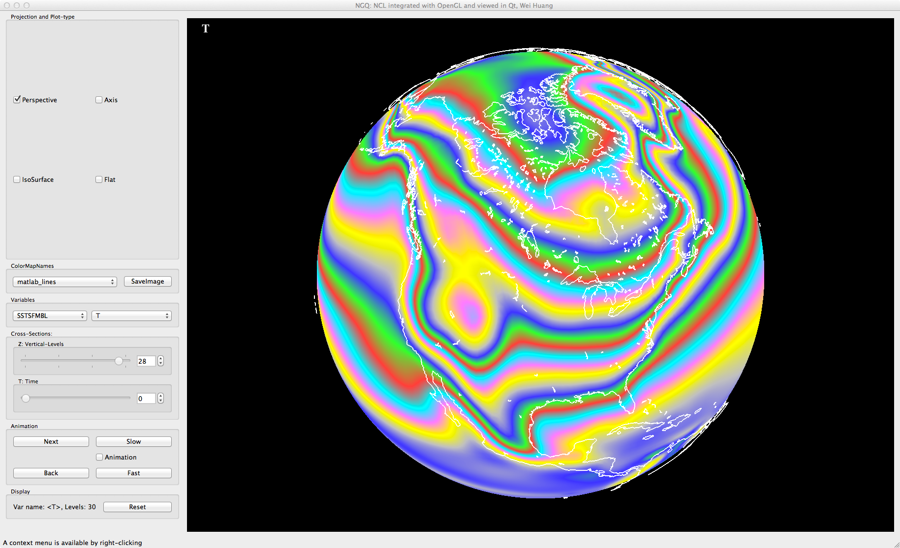
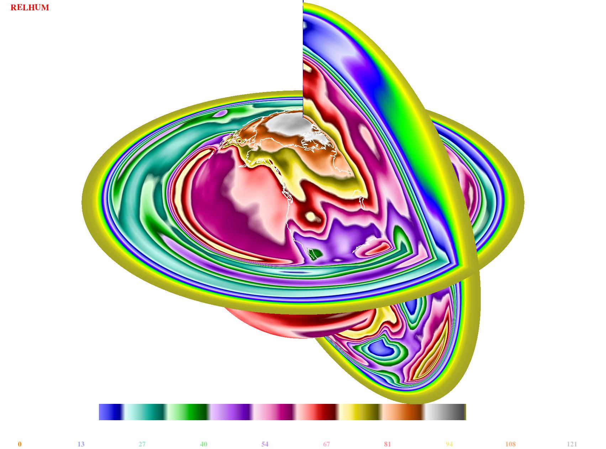
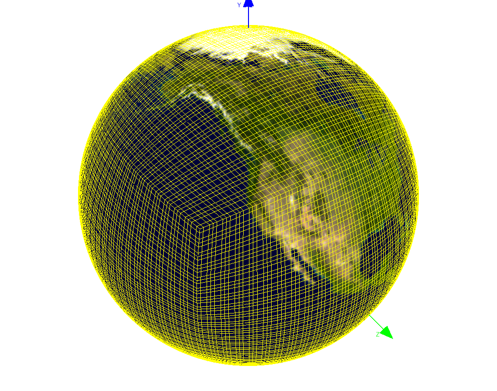
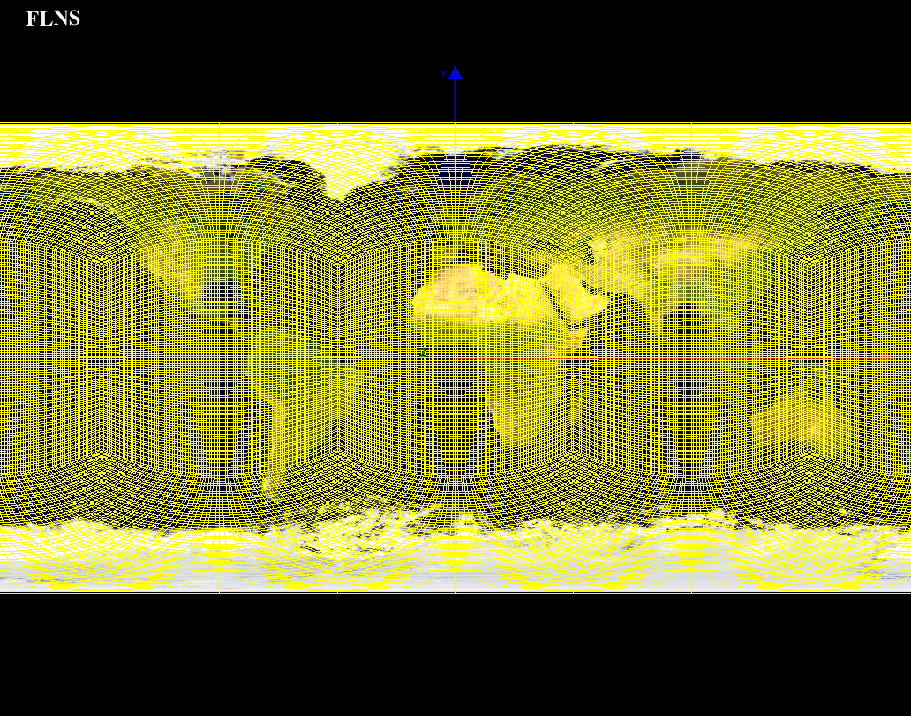

NV for CAM-SE
CAM-SE can be only visualized in OpenGL (for now).
Users may go to SITE
to learn how to plot CAM-SE data with NCL.
An image of FLNS.

An image of T.

Cross section of RELHUM.

A short movie of bumped TMQ.
Click Here to play the movie.
Here are the CAM-SE grids on plane and sphere.
CAM-SE grid on sphere:

CAM-SE grid on plane:
